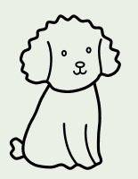
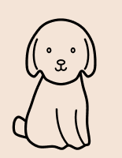

想定 01 / 散歩を分担
歩く人

待つ人
見ていない時間がある。
Personal project · iOS · UX / UI
一緒に散歩できなくても、愛犬の一日を家族と分かち合えるように。あとから散歩をたどれる体験を設計しました。
Personal project · TestFlight企画・情報設計・UIデザインを担当。GPT / Codexの支援で実装を進めながら、家族に何を、どう伝えるかを考えています。
01 / BACKGROUND
私が散歩する間、妻は家事をしている。そんな日常から、離れて暮らす家族にも愛犬の一日を届けたいと考えました。
想定 01 / 散歩を分担
歩く人

待つ人
見ていない時間がある。
想定 02 / 離れて暮らす
離れた
家族

犬のいる
家
毎日の様子が見えにくい。
自分の経験がほかの家族にも当てはまるか、近所の夫婦の散歩を観察しました。ただし、理由や困りごとは聞いていません。別々に歩くことだけでは共有の必要性は分からず、利用場面は仮説です。
02 / DESIGN DECISION
以下のアプリ画面は2026.11.05のシミュレーターデモ。架空の名前・公開ルート・一部生成写真を使用しており、実利用実績や最新リリースを示すものではありません。


数値
距離・時間を短く伝える
写真
表情や、その瞬間を残す
再生
場所と順序をつなぐ
採用 / ルート × 時間 × 写真
写真を撮った場所や前後の流れを一緒にたどれるタイムラプスを選びました。家族に何が伝わるかは、これから確かめます。
記録から共有へ
終了 → 確認 → 完了のフィードバック → 再生
終了の判断と記録を見る段階を分け、次の行動を明確にする設計。操作のしやすさは今後の検証項目です。
03 / FOCUS
予定・フィラリア予防薬・地図などを詰め込んだ初期案を見直し、散歩を始めて振り返る体験を優先しました。すべてをホームに置かず、管理機能は補助へ。
BEFORE / 初期構成の模式図
予定
予防薬
カレンダー
散歩
当時の画面そのものではなく、構成を説明する図。

愛犬と名前を中心に、次の犬のプレビューでスワイプを案内し、散歩指標から履歴へ。通知・設定の一貫性と、明暗どちらでも読めることも確認基準にしました。
04 / CHARACTER
18犬種から選べるキャラクターと、その動き。開く楽しさが再訪につながるのではないかと考えました。
継続利用への効果は未検証。

05 / WALK EXPERIENCE
ランニングアプリのように、時間と距離をひと目で。歩いた実感を伝え、必要なときはアプリへ戻れる入口を作ります。
歩く → 進行を確認 → アプリへ
確認する点：表示の更新・距離の整合性・復帰のしやすさ。


06 / VALIDATION
企画・UI・プロトタイプを制作し、自分で動作を確認。妻からの非公式な反応はありますが、外部ユーザーテストや需要・継続利用の検証はまだです。
開始までの操作を観察。完了・時間・迷う箇所を確認する。
家族連携→記録閲覧→再生→再訪を見て、何が伝わったかを聞く。
複数日の再訪と散歩への移行を観察。キャラクターの好ましさも聞く。
一緒に歩けない日も、
愛犬の一日を家族と。